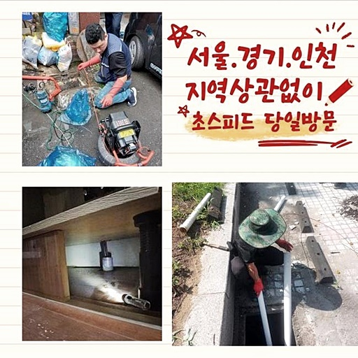
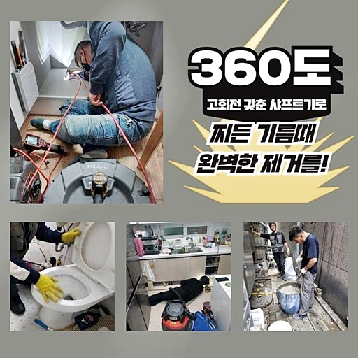
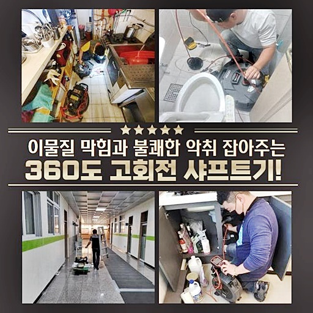
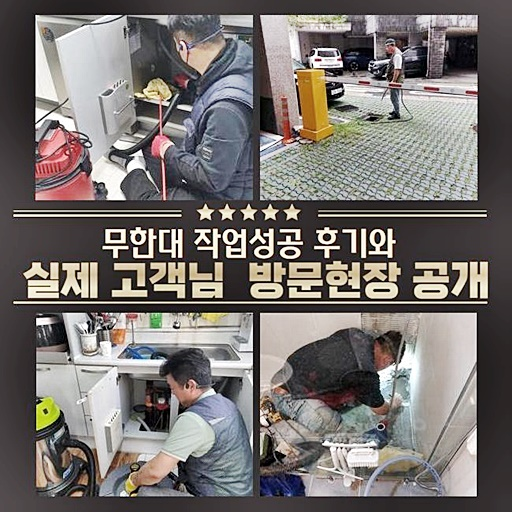
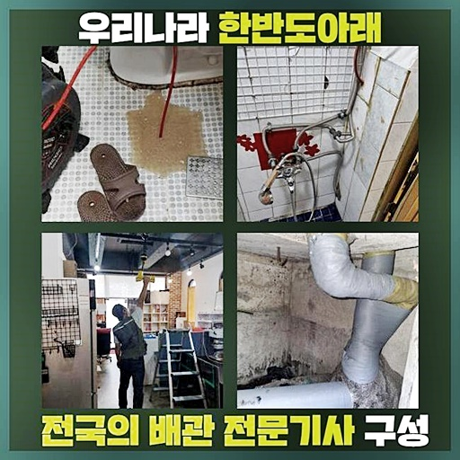
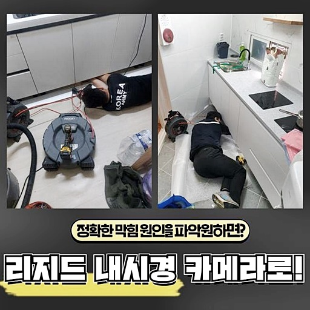
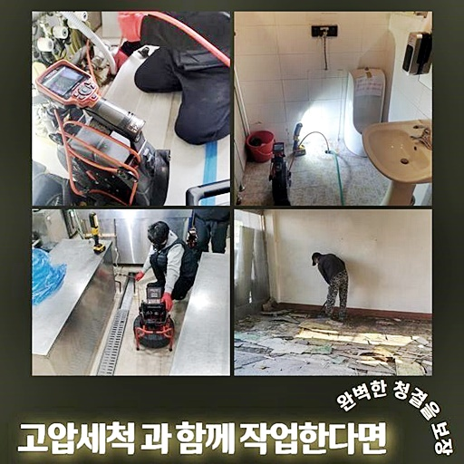

🏠 포천 군내면하수구막힘 신북면 횡주관청소 배관전문
용인시 처인구 배관막힘 전문 시공 후기

📋 작업 개요
- 위치: 용인시 처인구, 수원시 영통구, 화성시 동탄
- 서비스 유형: 배관막힘, 고압세척, 내시경점검
- 작업 일시:
- 업체명: 하수구수사대 (010-5615-2118)
🔍 문제 상황
포천 군내면하수구막힘 신북면 횡주관청소 배관전문
배수구가 문제를 보이면 생활적 부분을 유지시킴에있어서 곤란이 밀려올거에요
금일엔 배수관이 막혀버린 예시를 들어 여러방면에서 안내해드릴테니 천천히 읽으시면 도움되지않을까합니다
이제부터 설명을 시작하겠습니다
거주지에서 나타나게되는 문제들로 화장실바닥 배수구가 막히게되는 증상을 생각해볼 수 있어요
이외에 세탁기등이 자리한 장소라면 배수가 이뤄질때 옷감 잔해나 먼지처럼 잔재들이 쌓이게되어 하수도를 난관에 빠트리는 경우들이 때때로 생겨나요
배수관이 막혔을땐 애먼 곳에서 역류되는 문제들이 발현되고 하수관엔 이물이 잔존해있는 문제를 예측해볼 수 있는데요
내방한 현장에서는 화장실내부에서 하수를 배출하면 세탁기가 있는 장소로 물들이 올라오는 상태라고 연락을 하셨죠
저희업체는 오랫동안 전반적 하수구 기능장애를 해결해드렸기에 일반적으로 문제들을 추론하고 진단에 착수합니다
출동을 할때에 사용되는 도구들을 짊어지고 문제 장소에 당도했어요
보통 배수구가 막히게되는건 빈번하므로 어떤 이유다라고 말할순 없으나 대부분은 머리카락들과 기름기를 꼽을 수 있죠
질긴 머리카락등과 슬러지들이 뒤섞이면 딱딱해져 배수관을 막혀버리게 해요

🔎 원인 분석
💡 전문가 진단: 정밀 진단 장비를 사용하여 슬러지의 고착 여부를 판명하고 타격/세척 작업을 실시했습니다.
또한 한 군데가 막힌탓에 이외에 부분까지 문제를 전가시키는 경우일땐 뚫음작업이 만만치않아져요
장비를 운용치않고 증상을 바로잡는게 어려우므로 전문진이 요구된다 생각해요
도착한 뒤 세탁기가 있는곳으로 이동하였더니 하수관에선 역류한 오수를 확인했죠
악취들을 발생되는걸 확인하니 장기간동안 잔해물이 쌓이는 바람에 증상을 야기한걸로 생각했죠
벽면에 붙은 슬러지들이 통수를 방해하는걸 곧장 예측해보았습니다
배수로에 석션기기를 삽입해 잔해 청소를 이어갔어요
바로 문제가 해결될 거란 생각은 하지않았으나 그대로 막힘이 해결되는 결과물은 없었습니다
심각하지 않은 상황이면 석션기기로 시정이 이루어지는 경우들도 있어요
반대로 오늘의 문제는 간단한 문제가 아니라 스케일링을 하기에 이르렀는데요
하지만 즉시 샤프트를 무리하게 운용한다면 배수라인을 손상시키기에 심층부까지 내시경카메라로 관찰과정을 끝내고 진행키로 하였는데요
내시경장치로 배수관을 막히게하는 머리카락등과 오염물을 파악해보았습니다
그도 그럴것이 장시간에 걸쳐 축적되는 바람에 여기저기 자리를 잡고 있었고 슬러지성분으로 거듭되어 쉽게 내려가질 못했죠

🔧 작업 과정
대부분 슬러지의 경우 싱크대와 이어진 배수시설 주변으로 보여지나 세탁기에서 발생되는 잔해도 흡착하게되어 문제들을 발생시키는 사례들도 있는데요
잔해물이 쌓이면서 내부가 온도 차를 발생하는 상황으로 재빨리 석회처럼 되고 머리카락들과 엉키면 시정이 어려울 수 있어요
내시경으로 관찰한 광경은 예상밖에 심부에까지 자리잡았고 흡착률이 높아 석션기기로 증상을 바로잡는게 어려웠던 것입니다
배수구 근처에 빠져나온 잔해물을 청소해주고 깊숙히 집어넣은 뒤 빨아당겨 뚫어내는 과정을 수행하기 도움이 되는 환경들을 형성했죠
슬러지라던가 석회물을 일시에 제거시키는 샤프트장비들을 꼽게됩니다
샤프트의 경우 헤드부분에 체인부가 부착되어서 안쪽의 잔해물들을 타격하게 되죠
라인들을 안으로 투입해 제거시키는 메커니즘을 가지고 있어 깊은 위치까지도 제대로 파쇄작업을 수행합니다
반대로 노커부분이 가장자리에 흡착된 오염원을 끄집어내는 과정이므로 훼손의 위험들도 고려해야합니다
때문에 내시경장비로 내측을 지속적으로 검수해주고 청소를 실시하고 있어요
샤프트를 써서 내측의 오염물 작업에 박차를 가했습니다
제거작업 중에 샤프트장치에 엉겨붙은 머리카락덩어리도 볼 수 있었죠
세탁기가 있는 공간의 잔해물들을 분쇄하고 안쪽에 잔존하는 잔해는 석션장비로 흡입시켜 이전 상태와 같게 원상복구시켰어요
욕실내부의 증상도 바로 잡을 목적으로 욕실쪽의 배수관을 주시했고 이전처럼 스케일링과정을 이행했습니다
점검 결과 막히게된 증세와 더불어 물솟음이 생겨버린 사안으로서 내시경카메라로 구석구석 봐야했는데요
이전처럼 머리카락들과 딱딱해진 오염물을 내시경장치로 살필 수 있었습니다
배관 세척 중에 제거시킨 잔여물질의 양들도 많았습니다
배수관 안엔 고착화가 시작되었고 노후도 진행되어 완료까지 의외로 장기화 되었습니다
이러한 이물이 배수라인을 막히게하여 메인관으로 배출되는 일이 없었는데요
끝으로 화장실공간과 세탁기가 있는 곳 모두에서 배수검열을 보았습니다
통에 물들을 충분히 받은 뒤에 전부 붓고 빠른 속도로 배출되는 모습도 보았죠


✅ 작업 완료
문제없이 방문드린 장소에서도 청결히 조치했죠
만일 막히거나 역류등이 발생해 곤란함을 겪는 분이 있으시면 곧장 저희께 의뢰하시어 세척을 수행하도록 하세요!
어디라도 1시간내로 방문하고 실시하는 과정을 투명히 말씀드리므로 우려하실 일은 발생되지않아요!
갑자기 발생된 하수 시스템 오류를 무신경하게 대하기보단 증상을 알아차렸으면 저희들의 전문가들과 헤쳐나가보세요
또한 궁금하신게 계시다면 시간에 상관없이 물으셔도 환영이니 부담없이 전화거시면 상냥하게 맞이하겠습니다




⚠️ 하수구 배관 막힘 예방 및 관리 가이드
- ✅ 머리카락, 비닐, 물티슈 등 물에 분해되지 않는 이물질은 절대 흘려보내지 마세요.
- ✅ 기름기 많은 식기는 설거지 전 키친타올로 먼저 기름때를 닦아내세요.
- ✅ 주기적으로 배수구에 뜨거운 물을 가득 부어주어 유지방 고착을 방지하세요.
- ✅ 작업 후 1년 이내 재발 시 무상 A/S 보증 서비스를 제공합니다.
💡 핵심 정리
- 확실한 장비 작업(내시경 점검 및 샤프트 스케일링)으로 원인을 뿌리 뽑습니다.
- 작업 후 1년 이내에 동일한 부위 재발 시 100% 무상 A/S 서비스를 보장합니다.
- 서울 · 경기 · 인천 전 지역에 24시간 언제든 긴급 출동할 수 있도록 항시 대기 중입니다.
❓ 자주 묻는 질문 (FAQ)
🚨 용인시 처인구 배관막힘 문제로 고민이신가요?
정확한 원인 진단과 확실한 시공으로 재발 없는 해결을 약속드립니다.
24시간 긴급 출동 | 서울 · 경기 · 인천 전지역 | 1년 내 재발 시 무상 A/S